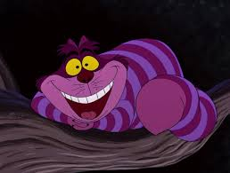
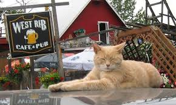

FACTS ON CATS
Famous Cats
Famous cats have left their paw prints across history, pop culture, and the internet. Garfield, the orange, lasagna-loving cartoon cat, became a global icon through comics and television. Felix the Cat, one of the earliest animated characters, helped shape the golden age of cartoons. In literature, the Cheshire Cat from Alice’s Adventures in Wonderland is remembered for his mischievous grin and cryptic advice. Real-life cats have also made headlines, like Stubbs, who served as the honorary mayor of Talkeetna, Alaska, for two decades. On the internet, Grumpy Cat gained worldwide fame for her permanent frown, while Maru, a Japanese cat, became adored for his obsession with boxes. Hello Kitty, though not a real cat, transformed into a cultural phenomenon and beloved mascot recognized everywhere. From ancient ships to viral memes, cats continue to charm and entertain people in every corner of the world.
- Garfield - The lasagna-loving cartoon cat created by Jim Davis.
- Cheshire Cat - A fictional character from Lewis Carroll's "Alice's Adventures in Wonderland," famous for its enigmatic smile. 
- Stubbs - The real-life cat who served as the honorary mayor of Talkeetna, Alaska, for 20 years. 
- Grumpy Cat - An internet sensation known for her permanently grumpy expression, whose real name was Tardar Sauce.

Lets Explore the World of Cats
Curious about cats? From whisker-twitching trivia to mind-blowing feline facts, discover everything you never knew about your favorite furry friends.
Famous Cats
Famous cats have left their paw prints across history, pop culture, and the internet. Garfield, the orange, lasagna-loving cartoon cat, became a global icon through comics and television. Felix the Cat, one of the earliest animated characters, helped shape the golden age of cartoons. In literature, the Cheshire Cat from Alice’s Adventures in Wonderland is remembered for his mischievous grin and cryptic advice. Real-life cats have also made headlines, like Stubbs, who served as the honorary mayor of Talkeetna, Alaska, for two decades. On the internet, Grumpy Cat gained worldwide fame for her permanent frown, while Maru, a Japanese cat, became adored for his obsession with boxes. Hello Kitty, though not a real cat, transformed into a cultural phenomenon and beloved mascot recognized everywhere. From ancient ships to viral memes, cats continue to charm and entertain people in every corner of the world.
- Garfield - The lasagna-loving cartoon cat created by Jim Davis.
- Cheshire Cat - A fictional character from Lewis Carroll's "Alice's Adventures in Wonderland," famous for its enigmatic smile.
- Stubbs - The real-life cat who served as the honorary mayor of Talkeetna, Alaska, for 20 years.
- Grumpy Cat - An internet sensation known for her permanently grumpy expression, whose real name was Tardar Sauce.
10 Fascinating Facts About Cats
- Cats have five toes on their front paws, but only four toes on their back paws.
- A group of cats is called a clowder.
- Cats can rotate their ears 180 degrees.
- The world's largest cat measured 48.5 inches long.
- Cats sleep for 70% of their lives.
- Each cat's noseprint is unique, much like a human fingerprint.
- Cats can make over 100 different sounds.
- The average cat weighs between 9 and 11 pounds.
- Cats have a special reflective layer behind their retinas, which helps them see in low light.
- Domestic cats are descended from the African wildcat.
Learn about different cat breeds, their behaviors, and how to take care of them.
Find a Cat Near You!
Use the map below to locate Mackamey animal shelter and rescue a cute cat today!
(423) 305-6500